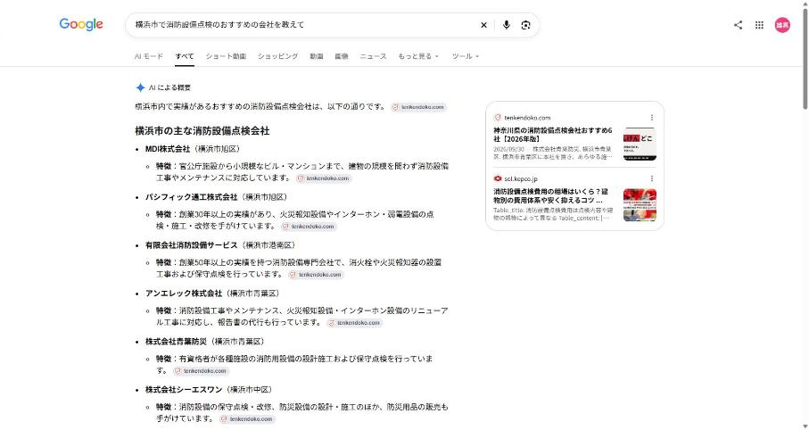

| 対象サイトURL | http://tatsumi-system.com/ |
| 業種 | 消防設備・建築設備の点検と工事 |
| 対応エリア | 横浜市を中心に神奈川県(本社:横浜市瀬谷区竹村町、愛知支店あり) |
| 調査日 | 2026年10月26日 |
Googleで検索したとき、これまでは関連するホームページの一覧が並ぶだけでした。いまは、検索結果の一番上に、AIが情報をまとめて表示するようになっています。これが「Googleオーバービュー」です。

実際の検索画面（「横浜市で消防設備点検のおすすめの会社を教えて」で検索、2026年10月26日時点）
ホームページの一覧よりも上、スマートフォンでは画面のほとんどを占める位置に表示されます。
「横浜市でおすすめの会社は？」と検索すると、AIがいくつかのサイトを読み比べて、具体的な会社名と特徴を紹介します。
工事を頼みたい方だけでなく、「横浜市で消防設備点検スタッフとして働きたい」と探す求職者にも、会社が紹介されます。
※検索画面では「AI による概要」と表示されている部分です。
検索結果の一覧から、お客様が1社ずつホームページを開いて見比べていました。上位に表示されていれば、見てもらえる可能性がありました。
AIが先に「おすすめの会社」を選んで紹介します。名前が挙がった会社から順に、詳しく調べられるようになっています。
Googleだけでなく、ChatGPTやGeminiに「おすすめの業者は？」と質問して候補を絞る人も増えています。どのAIも、ホームページやサイトの外の情報を読み比べて、紹介する会社を選んでいます。このレポートでは、この3つで御社がどう紹介されているかを調べました。
業者探しの入口が「検索結果の一覧」から「AIのまとめ」に移りつつあります。まとめの中で名前が挙がるかどうかで、候補に入れるかどうかが変わってきています。
参考：米国の調査では、AIのまとめが表示されたページで検索をやめた人は26％（まとめがないページでは16％）でした（Pew Research Center、2025年7月）。まとめを読んで判断を終える人が増えていることがうかがえます。
お客様がホームページを1社ずつ見比べる前に、AIのまとめの中で名前と特徴が伝わります。
Googleオーバービューは広告枠ではありません。AIが「紹介する価値がある」と判断した会社が載ります。
お客様や求職者が検索するたびに、AIが御社を紹介します。営業時間に関係なく働く案内役になります。
「横浜市で働きたい」という求職者の検索でも紹介されるため、採用の入口も広がります。
③の段階に進めるのは、②のまとめで名前が挙がった会社です。
| 項目 | 判定 | 得点 / 配点 |
|---|---|---|
| 現状① AIでの紹介状況 | × できていない | 0 / 30 |
| 現状② 社名で聞いたときの説明 | △ 一部できている | 5 / 10 |
| 内部① 信用できる根拠 | △ 一部できている | 4 / 8 |
| 内部② 施工事例 | × できていない | 0 / 8 |
| 内部③ 料金の目安 | × できていない | 0 / 8 |
| 内部④ よくある質問 | × できていない | 0 / 8 |
| 内部⑤ Googleに会社情報を正しく伝える設定 | × できていない | 0 / 8 |
| 外部① Googleマップの登録と口コミ | △ 一部できている | 5 / 10 |
| 外部② 第三者のおすすめ記事への掲載 | × できていない | 0 / 10 |
点数の見方：80点以上＝AIに紹介されやすい状態／60〜79点＝紹介される可能性はあるが、競合に先を越されやすい状態／40〜59点＝AIに紹介されにくい状態／39点以下＝AIの紹介対象にほぼ入っていない状態。
| AIの種類 | 質問した内容 | 御社の紹介 | 代わりに紹介された会社 |
|---|---|---|---|
| ChatGPT おすすめ型 | 横浜市で消防設備点検のおすすめの会社を教えて | 紹介なし | 東宝企業株式会社、有限会社旭総合メンテナンス、有限会社消防設備サービス |
| ChatGPT 費用・悩み型 | 横浜市 消防設備点検 費用 | 紹介なし | 費用相場の説明が中心で、料金を公開している他社が例として挙がっていました |
| Gemini おすすめ型 | 横浜市で消防設備点検のおすすめの会社を教えて | 紹介なし | うた防災株式会社、アンエレック株式会社、株式会社LIS |
| Gemini 費用・悩み型 | 横浜市 消防設備点検 費用 | 未確認 | 回答が得られませんでした(未確認) |
| Googleオーバービュー おすすめ型 | 横浜市で消防設備点検のおすすめの会社を教えて | 紹介なし | MDI株式会社、パシフィック通工株式会社、有限会社消防設備サービス |
| Googleオーバービュー 費用・悩み型 | 横浜市 消防設備点検 費用 | 紹介なし | 費用相場の説明のみで、会社名の紹介はありませんでした(料金を公開している他社のサイトが参考にされていました) |
| ChatGPT 求職者型 | 横浜市で消防設備点検スタッフとして就職したい。おすすめの会社を教えて | 紹介なし | 株式会社東京ファシリティサービス、有限会社消防設備サービス、有限会社DSS |
| Gemini 求職者型 | 横浜市で消防設備点検スタッフとして就職したい。おすすめの会社を教えて | 未確認 | 回答が得られませんでした(未確認) |
| Googleオーバービュー 求職者型 | 横浜市で消防設備点検スタッフとして就職したい。おすすめの会社を教えて | 紹介なし | 株式会社アイタン、株式会社横浜ライテック、株式会社藤建ビルテクノス |
おすすめ型・費用・悩み型＝お客様が探す場合、求職者型＝求職者が探す場合の質問です。「未確認」は調査日にAIから内容のある回答が得られなかった回で、紹介なしと同じ扱いで計算しています。
| AIの種類 | 説明された内容 | 正確さ |
|---|---|---|
| ChatGPT | 横浜市瀬谷区で消防設備・建築設備の点検・保守、設備工事、ビルメンテナンス全般を手がける会社と説明されていました。所在地・設立2005年・資本金・代表者名・建設業許可(電気工事業・消防施設工事業)まで案内されていました。 | 正確 |
| Gemini | 「配管の支持金具や金属加工製品の製造・販売を手がける金属加工メーカー」と説明されていました。 補足：御社の事業(消防設備・建築設備の点検と工事)とまったく違う内容でした。「タツミ」という同じ名前の会社が多く、AIが別の会社と取り違えていると考えられます。 | 誤り |
| Googleオーバービュー | 消防設備・建築設備の保守点検と工事、ビルメンテナンスを手がける会社として、所在地・設立2005年・資本金・電話番号が表示されていました。 | 正確 |
AIは、ホームページの中身とサイトの外での評判・掲載の両方を見て、紹介する会社を選びます。御社の状況は次のとおりです。
| 項目 | 御社の状態 | 判定 |
|---|---|---|
| 信用できる根拠 代表者の顔・資格・実績の数字・許可番号・スタッフ | 会社概要に建設業許可(電気工事業・消防施設業 神奈川県知事許可 第80346号)と、2005年の設立からの沿革が掲載されています。代表者の顔写真とメッセージ、保有資格(消防設備士など)、スタッフ紹介はありません(5点中2点)。 | △ 一部できている |
| 施工事例 件数・文章での説明・最新の掲載時期 | 施工事例・点検実績のページはありません。事業内容のページは点検・工事の項目の一覧のみです。 | × できていない |
| 料金の目安 | 点検・工事の料金の目安に関する記載はありません。 | × できていない |
| よくある質問 | よくある質問のページやコーナーはありません。 | × できていない |
| Googleに会社情報を正しく伝える設定 | サイトのソースに、会社情報を伝える設定は書かれていません。 | × できていない |
| 項目 | 御社の状態 | 判定 |
|---|---|---|
| Googleマップの登録と口コミ | Googleマップでは竹村町に「Tatsumi」という名前で登録がありますが、口コミは0件で、電話番号・ウェブサイトは表示されていません。「タツミ」で検索すると、同じ名前の別の会社が10件ほど並びます。 | △ 一部できている |
| 第三者のおすすめ記事への掲載 | 「横浜市 消防設備点検 おすすめ」のGoogle検索上位9件のうち4件が比較サイト・おすすめ記事・業者一覧でした。御社はどれにも載っておらず、他社(MDI・有限会社消防設備サービス・アンエレックなど)が紹介されていました。 | × できていない |
AIは「御社のことを、御社以外のサイトがどう紹介しているか」と「御社のホームページに、判断に必要な情報がそろっているか」を見ています。御社の場合、次の2つに取り組むことで、紹介されやすい状態に近づけることができます。
AIは、自社サイト以外で御社をすすめている記事を重視します。建設業専門メディア「建設円陣PLUS」では、社長への取材（15〜30分程度）をもとに、御社の特集ページを作成しています（掲載費用はかかりません）。ネット上にない御社の生の声が記事になり、AIが参考にできる情報が増えます。
御社の現状：検索上位のおすすめ記事には、まだ掲載されていません。
口コミの件数と評価、写真やサービス内容の登録は、AIが地域の会社を選ぶときの判断材料になります。
御社の現状：口コミ0件
代表者の顔写真とメッセージ・保有資格（資格名と人数）・スタッフ紹介を載せる
工事内容・地域・工期・お客様の困りごとを文章で書いた事例を、20件以上を目安に掲載し、更新を続ける
工事ごとの費用の目安や料金表を載せる（「〇〇円〜」の目安だけでも効果があります）
お客様が実際に聞く質問（費用・工期・保証・対応エリアなど）を10問以上まとめる
所在地・電話番号・営業時間・対応エリア・よくある質問を、Googleが読み取れる形でホームページに設定する
これらは1ページずつ足すよりも、ホームページのリニューアルで構成から見直すと、まとめて整えることができます。